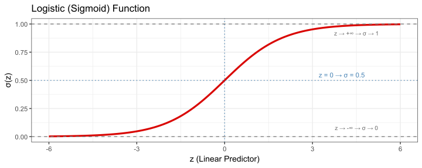
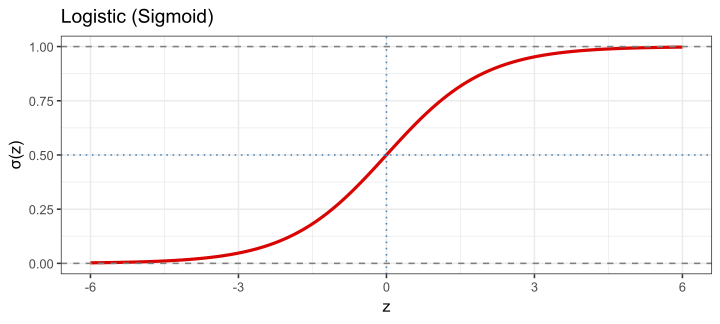
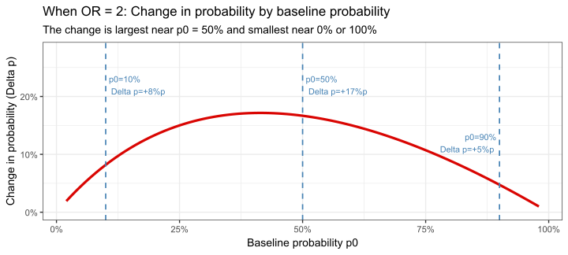
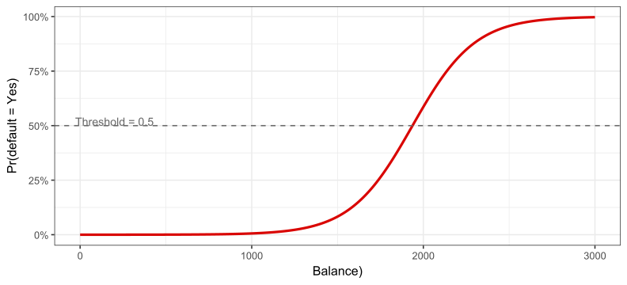
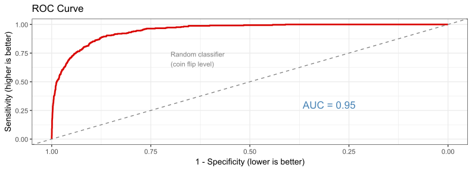

## Rows: 10,000
## Columns: 4
## $ default <fct> No, No, No, No, No, No, No, No, No, No, No, No, No, No, No, No…
## $ student <fct> No, Yes, No, No, No, Yes, No, Yes, No, No, Yes, Yes, No, No, N…
## $ balance <dbl> 729.5265, 817.1804, 1073.5492, 529.2506, 785.6559, 919.5885, 8…
## $ income <dbl> 44361.625, 12106.135, 31767.139, 35704.494, 38463.496, 7491.55…Logistic Regression
FMB819: R을 이용한 데이터분석
고려대학교 경영대학 정지웅
Today’s Agenda
로지스틱 회귀(Logistic Regression) 의 필요성과 직관적 이해
오즈(Odds) 와 로그 오즈(Log-odds) 개념 및 계수 해석
실증 분석: 신용카드 채무 불이행(Default) 예측
예측 확률 계산 및 모형 적합도 평가
왜 로지스틱 회귀인가?
지금까지는 연속형 종속변수 \(y\)를 다루었음: 수익률, 매출, 가격 등
하지만 현실에서는 이진(binary) 결과에 관심을 갖는 경우가 많음:
- 대출 채무 불이행 여부 (default vs. non-default)
- 주가 방향 (상승 vs. 하락)
- 고객 이탈 여부 (이탈 vs. 유지)
- M&A 성사 여부 (성공 vs. 실패)
이처럼 \(y_i \in \{0, 1\}\) 인 경우, OLS(선형 회귀)를 그대로 적용하면 문제가 생길 수 있음.
로지스틱 회귀(Logistic Regression) 는 이러한 이진 결과를 모형화하기 위해 고안된 방법임.
분석 예제: 신용카드 채무 불이행
ISLR2패키지의Default데이터셋 사용10,000명의 신용카드 고객에 대한 데이터:
변수 설명 default채무 불이행 여부 ( Yes/No)student학생 여부 ( Yes/No)balance평균 신용카드 잔액 (달러) income연간 소득 (달러) 신용카드 잔액(
balance)과 소득(income)으로 채무 불이행을 예측할 수 있는가?
데이터 살펴보기
- 채무 불이행자(
Yes)는 전체의 약 3.3%
채무 불이행자의 분포


- 채무 불이행자는 신용카드 잔액이 높은 경향이 있음.
선형 확률 모형 (Linear Probability Model)
- 가장 단순한 접근: \(y_i \in \{0, 1\}\) 에 그냥 OLS를 적용
\[ \text{Default}_i = b_0 + b_1 \cdot \text{balance}_i + e_i \]

선형 확률 모형의 문제점
문제 1: 확률이 [0, 1] 범위를 벗어남
- OLS는 예측값이 음수 혹은 1 초과가 될 수 있음
- 확률은 반드시 \([0, 1]\) 사이여야 함
문제 2: 분산이 이분산(heteroskedastic)
- \(y_i \in \{0,1\}\)이면 \(\text{Var}(e_i) = p_i(1-p_i)\)
- \(p_i\)가 \(x_i\)에 따라 변하므로, 분산이 일정하지 않음
우리에게 필요한 것:
\(x\)가 어떤 값을 갖더라도 항상 [0, 1] 사이의 값을 출력하는 함수
\[ \Pr(y_i = 1) = f(b_0 + b_1 x_i) \in [0,1] \]
→ 이 역할을 하는 것이 로지스틱(시그모이드) 함수
로지스틱 함수 (Logistic / Sigmoid Function)
- 로지스틱 함수는 임의의 실수 \(z\)를 \((0, 1)\) 구간으로 변환:
\[ \sigma(z) = \frac{e^z}{1 + e^z} = \frac{1}{1 + e^{-z}} \]

- \(z \to +\infty\)이면 \(\sigma(z) \to 1\), \(z \to -\infty\)이면 \(\sigma(z) \to 0\)
로지스틱 회귀 모형
- 선형 예측(linear predictor) \(z_i = b_0 + b_1 x_i\)를 로지스틱 함수에 통과:
\[ \Pr(y_i = 1 \mid x_i) = \frac{e^{b_0 + b_1 x_i}}{1 + e^{b_0 + b_1 x_i}} \]
- 채무 불이행 예제에 적용:
\[ \Pr(\text{default}_i = 1) = \frac{e^{b_0 + b_1 \cdot \text{balance}_i}}{1 + e^{b_0 + b_1 \cdot \text{balance}_i}} \]

오즈(Odds)란 무엇인가?
- 오즈(Odds): 사건이 일어날 확률 vs. 일어나지 않을 확률의 비율
\[ \text{Odds} = \frac{p}{1-p} \]
- 스포츠 베팅에서 익숙한 개념: “이길 확률이 75%”라면 오즈 = 3 (3:1)
| 확률 \(p\) | 오즈 \(\frac{p}{1-p}\) | 직관적 표현 |
|---|---|---|
| 0.10 | 0.111 | 10번 중 1번 성공 |
| 0.50 | 1.000 | 반반 |
| 0.75 | 3.000 | 4번 중 3번 성공, 1번 실패 |
| 0.90 | 9.000 | 10번 중 9번 성공 |
- 역변환: 오즈 → 확률
\[ p = \frac{\text{Odds}}{1 + \text{Odds}} \]
- 예: 오즈 = 3 → \(p = \frac{3}{1+3} = 0.75\)
로그 오즈(Log-Odds)와 로지스틱 회귀의 연결
- 오즈는 항상 양수(0 ~ ∞). 로그를 취하면 → 로그 오즈(log-odds, logit): \((-\infty, +\infty)\)
\[ \text{log-odds} = \log\left(\frac{p}{1-p}\right) \]
- 로지스틱 회귀는 이 로그 오즈를 선형 함수로 모형화:
\[ \underbrace{\log\left(\frac{p_i}{1-p_i}\right)}_{\text{log-odds}} = b_0 + b_1 x_i \]
- 양변을 \(p\)에 대해 풀면 → 로지스틱 함수:
\[ p_i = \frac{e^{b_0 + b_1 x_i}}{1 + e^{b_0 + b_1 x_i}} \]
세 가지 스케일의 관계:
\[ \underbrace{p}_{\text{확률 (0~1)}} \longleftrightarrow \underbrace{\frac{p}{1-p}}_{\text{오즈 (0~∞)}} \longleftrightarrow \underbrace{\log\frac{p}{1-p}}_{\text{로그오즈 (-∞~+∞)}} \]
오즈비(Odds Ratio): 정의와 의미
- 오즈비(OR): \(x\)가 1단위 증가했을 때 오즈의 배율 변화
\[ \text{OR} = \frac{\text{Odds}(x+1)}{\text{Odds}(x)} = e^{b_1} \]
왜 \(e^{b_1}\)인가? 로그 오즈 모형에서:
\[ \log\text{Odds}(x+1) - \log\text{Odds}(x) = b_1 \quad\Rightarrow\quad \frac{\text{Odds}(x+1)}{\text{Odds}(x)} = e^{b_1} \]
해석 방법:
| OR 값 | 의미 |
|---|---|
| OR = 1 | \(x\)와 무관 (\(b_1 = 0\)) |
| OR = 2 | \(x\) 1단위 증가 → 오즈가 2배 |
| OR = 0.5 | \(x\) 1단위 증가 → 오즈가 절반 |
| OR = 1.10 | \(x\) 1단위 증가 → 오즈가 10% 증가 |
⚠️ OR은 확률의 변화가 아니라 오즈의 배율 변화임에 주의!
계수 해석: 3단계로 이해하기
로지스틱 회귀 계수 \(b_1\)은 직접 “확률 변화”를 의미하지 않음.
3단계를 거쳐야 최종 확률 변화를 알 수 있음.
구체적인 예시: \(b_1 = 0.7\) 이라면?
| 단계 | 계산 | 의미 |
|---|---|---|
| Step 1 방향 파악 | \(b_1 = 0.7 > 0\) | \(x\) 증가 → 확률 증가 |
| Step 2 오즈비 계산 | \(\text{OR} = e^{0.7} \approx 2.0\) | \(x\) 1단위 증가 → 오즈가 2배 |
| Step 3 확률 변화 계산 | 기준 확률에 따라 다름 | 아래 참조 ↓ |
기준 확률(baseline probability) \(p_0\): \(x\)가 변하기 전, 현재 고객의 채무 불이행 확률.
예) 잔액 1,000달러 고객의 불이행 확률이 3% → \(p_0 = 0.03\)
OLS와 달리 로지스틱 회귀에서는 어디서 출발하느냐에 따라 확률 변화폭이 달라짐.
Step 3: 기준 확률 \(p_0\)에서 \(x\)가 1 증가하면
\[p_1 = \frac{\text{OR} \times p_0}{1 - p_0 + \text{OR} \times p_0}\]
| 기준 확률 \(p_0\) | OR = 2 적용 후 \(p_1\) | 변화 \(\Delta p\) |
|---|---|---|
| 10% | \(\frac{2 \times 0.1}{0.9 + 0.2} = 18\%\) | +8%p |
| 50% | \(\frac{2 \times 0.5}{0.5 + 1.0} = 67\%\) | +17%p |
| 90% | \(\frac{2 \times 0.9}{0.1 + 1.8} = 95\%\) | +5%p |
OR은 같아도 기준 확률에 따라 실제 확률 변화폭이 다름!
왜 확률 변화폭이 달라지는가?
OR = 2 (오즈가 2배) 일 때, 기준 확률에 따른 확률 변화:

직관: 확률이 이미 90%면 아무리 OR이 커도 100%를 넘을 수 없음 → 변화폭이 작아질 수밖에 없음.
반대로 확률이 0%에 가깝다면 아무리 OR이 커도 올라갈 여지가 적음.
R에서 로지스틱 회귀: glm()
- 로지스틱 회귀는
glm()함수로 추정 (lm()대신)
family = binomial: 이진 종속변수를 위한 로지스틱 회귀 지정
채무 불이행 예제:
##
## Call:
## glm(formula = default ~ balance, family = binomial, data = Default)
##
## Coefficients:
## Estimate Std. Error z value Pr(>|z|)
## (Intercept) -1.065e+01 3.612e-01 -29.49 <2e-16 ***
## balance 5.499e-03 2.204e-04 24.95 <2e-16 ***
## ---
## Signif. codes: 0 '***' 0.001 '**' 0.01 '*' 0.05 '.' 0.1 ' ' 1
##
## (Dispersion parameter for binomial family taken to be 1)
##
## Null deviance: 2920.6 on 9999 degrees of freedom
## Residual deviance: 1596.5 on 9998 degrees of freedom
## AIC: 1600.5
##
## Number of Fisher Scoring iterations: 8추정 결과 해석
| term | estimate | std.error | statistic | p.value |
|---|---|---|---|---|
| (Intercept) | -10.65133 | 0.36116 | -29.49221 | 0 |
| balance | 0.00550 | 0.00022 | 24.95309 | 0 |
계수 해석:
\(\hat{b}_1 \approx 0.00550\):
balance가 $1 증가할 때, 채무 불이행의 로그 오즈가 0.00550 증가오즈비: \(e^{0.00550} \approx 1.0055\) →
balance$1 증가 시, 채무 불이행 오즈가 약 0.55% 증가balance가 1,000달러 증가하면: \(e^{0.00550 \times 1000} \approx 241\) → 오즈가 약 241배 증가!
예측 확률 계산
predict()함수로 예측값을 구할 수 있음type = "response": 확률 스케일로 예측 (기본은 로그 오즈 스케일)
## 1
## 0.005752145## 1
## 0.5857694- 잔액이 두 배가 된다고 해서 확률이 단순히 두 배 되지 않음 → 비선형(non-linear) 관계
예측 확률: 시각화

- 잔액이 일정 수준을 넘으면 채무 불이행 확률이 급격히 상승
Task 1
Default데이터에서default를 이진 변수(0/1)로 변환한 뒤,balance에 대해 OLS 회귀와 로지스틱 회귀를 각각 추정하시오.
balance = 500,balance = 2500에서 두 모형의 예측값을 비교하시오. OLS와 로지스틱 회귀 결과가 어떻게 다른가? 왜 그런가?
student변수(학생 여부)만을 독립변수로 한 로지스틱 회귀를 추정하시오. 계수를 해석하고, 오즈비(Odds Ratio) 를 계산하시오.
다중 로지스틱 회귀 (Multiple Logistic Regression)
- 단순 로지스틱 회귀와 마찬가지로, 여러 개의 독립변수를 포함할 수 있음:
\[ \log\left(\frac{p_i}{1-p_i}\right) = b_0 + b_1 x_{1i} + b_2 x_{2i} + \cdots + b_k x_{ki} \]
- 각 계수 \(b_j\)는 다른 변수들을 통제한 후, \(x_j\)가 1 단위 증가할 때 로그 오즈의 변화
##
## Call:
## glm(formula = default ~ balance + income + student, family = binomial,
## data = Default)
##
## Coefficients:
## Estimate Std. Error z value Pr(>|z|)
## (Intercept) -1.087e+01 4.923e-01 -22.080 < 2e-16 ***
## balance 5.737e-03 2.319e-04 24.738 < 2e-16 ***
## income 3.033e-06 8.203e-06 0.370 0.71152
## studentYes -6.468e-01 2.363e-01 -2.738 0.00619 **
## ---
## Signif. codes: 0 '***' 0.001 '**' 0.01 '*' 0.05 '.' 0.1 ' ' 1
##
## (Dispersion parameter for binomial family taken to be 1)
##
## Null deviance: 2920.6 on 9999 degrees of freedom
## Residual deviance: 1571.5 on 9996 degrees of freedom
## AIC: 1579.5
##
## Number of Fisher Scoring iterations: 8다중 로지스틱 회귀: OVB
단변수 회귀 (student만)
| term | estimate | p.value |
|---|---|---|
| (Intercept) | -3.5041 | 0e+00 |
| studentYes | 0.4049 | 4e-04 |
→ 학생일수록 채무 불이행 확률 증가 (\(b_1 > 0\))
다중 회귀 (balance, income, student)
| term | estimate | p.value |
|---|---|---|
| (Intercept) | -10.8690 | 0.0000 |
| balance | 0.0057 | 0.0000 |
| income | 0.0000 | 0.7115 |
| studentYes | -0.6468 | 0.0062 |
→ balance, income 통제 후, 학생일수록 채무 불이행 확률 감소 (\(b_1 < 0\))
- 누락변수: 학생은 잔액이 높은 경향이 있어, 단변수 회귀에서 편향이 발생!
모형 적합도: 혼동 행렬 (Confusion Matrix)
로지스틱 회귀의 예측 성능을 평가하는 방법 중 하나: 혼동 행렬(Confusion Matrix)
예측 확률 > 0.5이면
Yes로 분류 (기본 임계값, threshold)
## Actual
## Predicted No Yes
## No 9627 228
## Yes 40 105| 지표 | 설명 |
|---|---|
| 정확도(Accuracy) | 전체 중 올바르게 분류된 비율 |
| 민감도(Sensitivity) | 실제 Yes 중 Yes로 분류된 비율 (True Positive Rate) |
| 특이도(Specificity) | 실제 No 중 No로 분류된 비율 (True Negative Rate) |
모형 적합도: Pseudo \(R^2\)
- OLS의 \(R^2\)는 로지스틱 회귀에 직접 적용되지 않음 — 잔차 제곱합 개념이 없기 때문
우도(Likelihood)란?
“이 모형이 맞다면, 실제로 관측된 데이터가 나올 확률”
- 예) 10명 중 3명이 채무 불이행 → 모형이 이 3명에게 높은 확률을, 나머지 7명에게 낮은 확률을 예측할수록 우도가 높음
- 우도가 높을수록 → 모형이 데이터를 잘 설명함
- 계산 편의상 로그를 취한 로그 우도(log-likelihood) 사용: 항상 음수, 0에 가까울수록 좋음
McFadden’s Pseudo \(R^2\): 귀무모형 대비 얼마나 우도가 개선되었는가?
\[ R^2_{\text{McFadden}} = 1 - \frac{\log L(\hat{M})}{\log L(M_0)} \]
- \(\log L(M_0)\): 절편만 있는 귀무모형 — “아무것도 모를 때”의 기준선
- \(\log L(\hat{M})\): 추정 모형 — 설명변수 추가로 항상 귀무모형보다 우도가 높음
왜 추정 모형이 좋을수록 \(R^2\)가 커지는가?
로그 우도는 항상 음수이므로, 모형이 좋을수록 \(\log L(\hat{M})\)이 0에 가까워짐 (덜 음수).
| 상황 | \(\log L(M_0)\) | \(\log L(\hat{M})\) | 비율 | \(R^2\) |
|---|---|---|---|---|
| 개선 없음 | -100 | -100 | 1.00 | 0 |
| 절반 개선 | -100 | -50 | 0.50 | 0.5 |
| 완벽한 모형 | -100 | ≈ 0 | ≈ 0 | ≈ 1 |
- 통상 0.2 ~ 0.4이면 양호한 모형으로 간주
Task 2
balance,income,student를 모두 포함한 다중 로지스틱 회귀 결과에서, 각 변수의 오즈비(Odds Ratio) 를 계산하고 해석하시오.
- 다음 두 고객의 채무 불이행 예측 확률을 구하시오:
- 고객 A: 학생, 잔액 1,500달러, 소득 40,000달러
- 고객 B: 비학생, 잔액 1,500달러, 소득 40,000달러
- 혼동 행렬에서 정확도(Accuracy), 민감도(Sensitivity), 특이도(Specificity) 를 직접 계산하시오.
pred_prob <- predict(logit_multi, type = "response")
pred_class <- ifelse(pred_prob > 0.5, "Yes", "No")
cm <- table(Predicted = pred_class, Actual = Default$default)
accuracy <- sum(diag(cm)) / sum(cm)
sensitivity <- cm["Yes", "Yes"] / sum(cm[, "Yes"])
specificity <- cm["No", "No"] / sum(cm[, "No"])
c(Accuracy = accuracy, Sensitivity = sensitivity, Specificity = specificity)임계값(Threshold)의 선택
로지스틱 회귀는 확률을 예측함. 이 확률을 Yes/No로 분류하려면 기준선(threshold)이 필요.
“예측 확률 > threshold 이면 Default = Yes로 분류”
threshold를 바꾸면 어떤 일이 생기는가?
| threshold | 결과 | 문제 |
|---|---|---|
| 낮게 설정 (예: 0.1) | 조금만 의심스러워도 Yes → 채무불이행자를 많이 잡음 | 정상 고객도 Yes로 잘못 분류 |
| 높게 설정 (예: 0.9) | 거의 확실할 때만 Yes → 정상 고객을 거의 안 건드림 | 실제 채무불이행자를 많이 놓침 |
→ 민감도(Sensitivity) 와 특이도(Specificity) 는 항상 trade-off 관계
ROC 곡선
ROC 곡선: threshold를 0 → 1로 움직이면서 민감도/특이도 변화를 추적한 곡선

- 곡선이 왼쪽 위 모서리에 가까울수록 좋은 모형
- AUC: 곡선 아래 면적. 1이면 완벽, 0.5면 동전 던지기와 동일 (점선)
OLS vs. 로지스틱 회귀: 정리
| 구분 | OLS | 로지스틱 회귀 |
|---|---|---|
| 종속변수 | 연속형 | 이진형 (0/1) |
| 추정 방법 | 최소제곱법 (OLS) | 최대우도법 (MLE) |
| 예측값 범위 | \((-\infty, +\infty)\) | \((0, 1)\) |
| 계수 해석 | \(y\)의 변화량 | 로그 오즈의 변화량 |
| 적합도 지표 | \(R^2\) | Pseudo \(R^2\), AUC |
| R 함수 | lm() |
glm(..., family = binomial) |
Task 3
Default데이터를 7:3 비율로 훈련(train) / 테스트(test) 세트로 분리한 뒤, 훈련 세트로 다중 로지스틱 회귀를 추정하시오.
- 테스트 세트에서 예측 확률을 계산한 뒤, threshold = 0.5를 기준으로 혼동 행렬을 구하시오. 훈련 세트와 비교하여 과적합(overfitting) 여부를 판단하시오.
- (Optional)
pROC패키지를 사용하여 테스트 세트의 ROC 곡선과 AUC를 계산하고 시각화하시오.